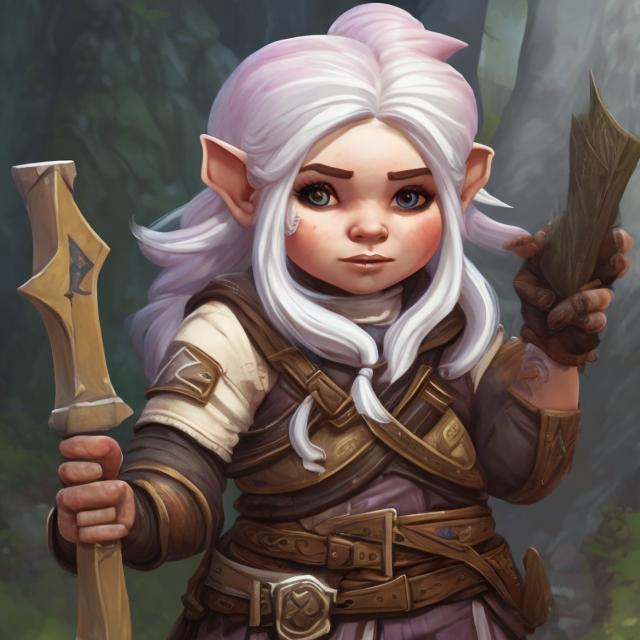
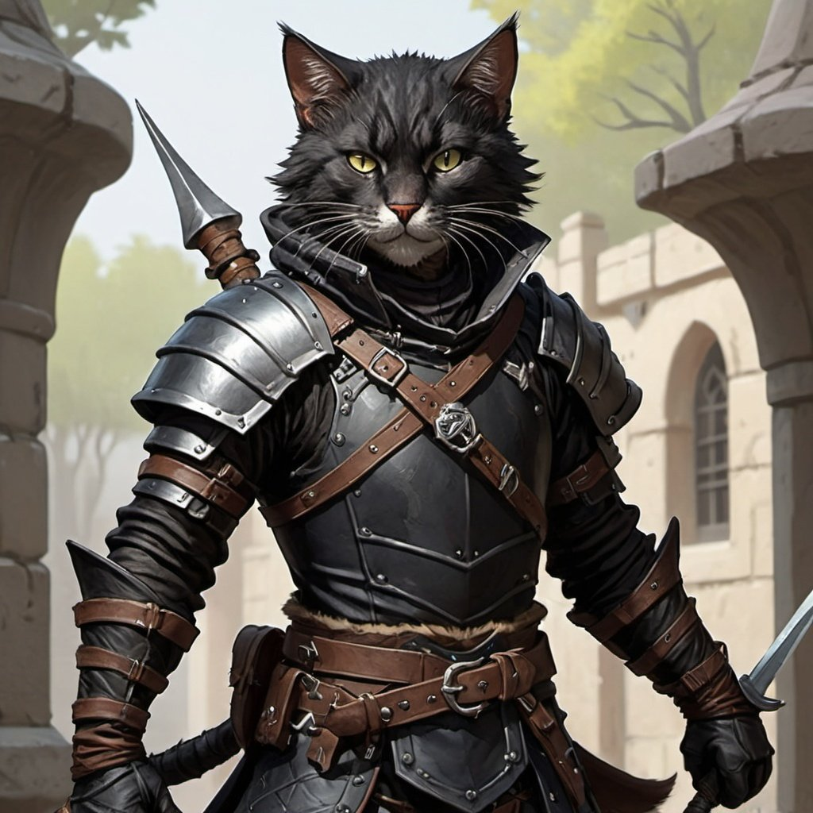
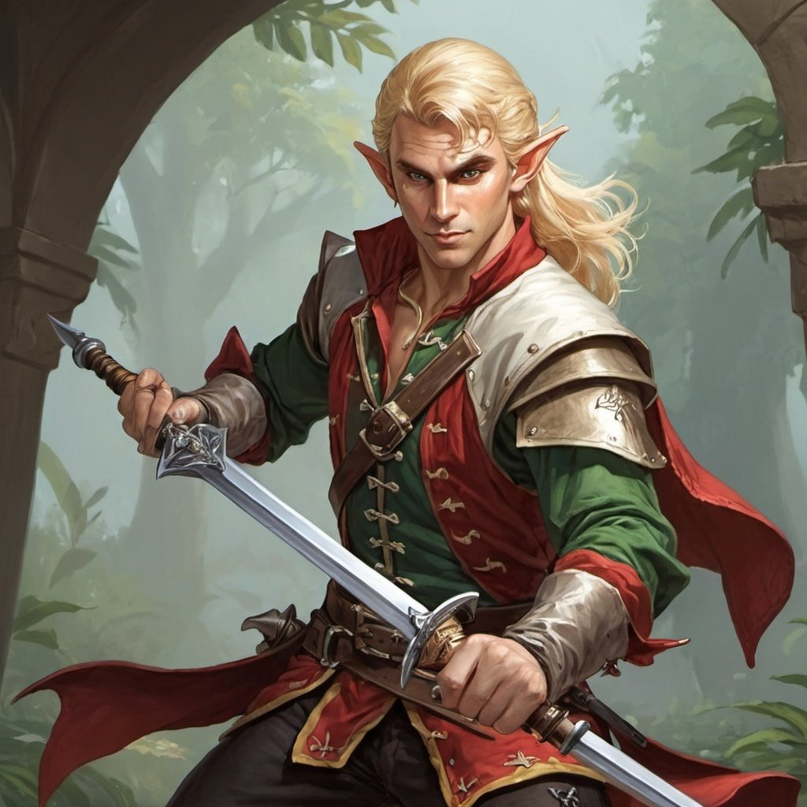
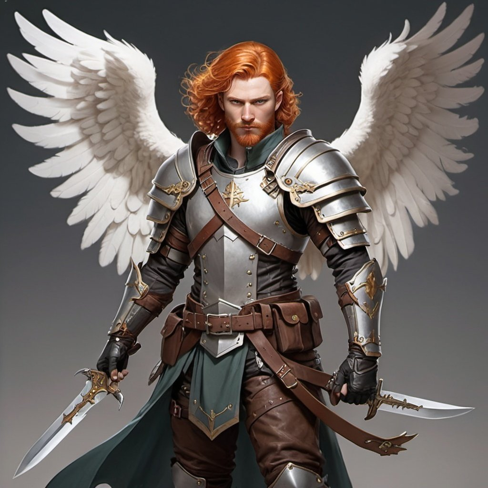
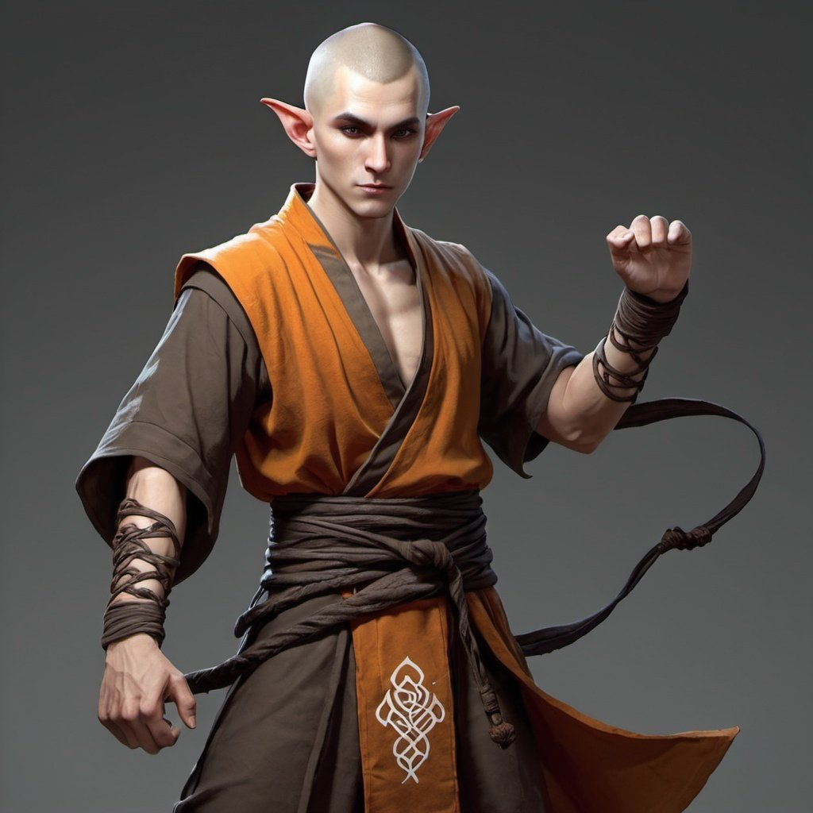

Age of Ashes
Characters
| Name | About | Portrait |
|---|---|---|
| Vejonica Fizzlesprocket | Gnome cleric of Saranrae |  |
| Quan | Catfolk rogue |  |
| Findir | Elf swashbuckler |  |
| Rab McNab | Human/Aasimar ranger |  |
| Baba Ganoush | Elf monk |  |
Chapters
Hellknight Hill
In which the team volunteer to help a goblin tribe, explore and then take over a ruined castle, fight some jungle-native cultists and discover a ring of six elf-gates under the hill.
Cult of Cinders
In which the team travel through an elf-gate to a distant jungle, befriend some elves and defeat the remaining cultists and befriend a young dragon.
Tomorrow Must Burn
The team go through another gate, defeat some slavers who were ransacking a village, investigate the mysterious Scarled Triad, stop some evil plots in Kintargo and chase the remaining slavers to an old quarry.
Fires of the Haunted City
The party find themselves in the ancient dwarven city ruins of Saggorak under the mountain, long haunted by ghosts, ghouls and other unsavoury types. They find the reclaimed part of the city called Kovlar under threat and work to save it from the machinations of the Scarlet Triad and their allies.